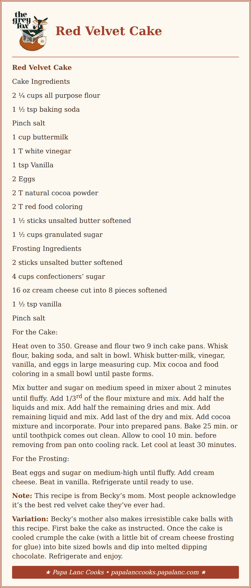

WELCOME
Red Velvet Cake
Cake Ingredients
2 ¼ cups all purpose flour
1 ½ tsp baking soda
Pinch salt
1 cup buttermilk
1 T white vinegar
1 tsp Vanilla
2 Eggs
2 T natural cocoa powder
2 T red food coloring
1 ½ sticks unsalted butter softened
1 ½ cups granulated sugar
Frosting Ingredients
2 sticks unsalted butter softened
4 cups confectioners’ sugar
16 oz cream cheese cut into 8 pieces softened
1 ½ tsp vanilla
Pinch salt
For the Cake:
Heat oven to 350. Grease and flour two 9 inch cake pans. Whisk flour, baking soda, and salt in bowl. Whisk butter-milk, vinegar, vanilla, and eggs in large measuring cup. Mix cocoa and food coloring in a small bowl until paste forms.
Mix butter and sugar on medium speed in mixer about 2 minutes until fluffy. Add 1/3rd of the flour mixture and mix. Add half the liquids and mix. Add half the remaining dries and mix. Add remaining liquid and mix. Add last of the dry and mix. Add cocoa mixture and incorporate. Pour into prepared pans. Bake 25 min. or until toothpick comes out clean. Allow to cool 10 min. before removing from pan onto cooling rack. Let cool at least 30 minutes.
For the Frosting:
Beat eggs and sugar on medium-high until fluffy. Add cream cheese. Beat in vanilla. Refrigerate until ready to use.
Note: This recipe is from Becky’s mom. Most people acknowledge it’s the best red velvet cake they’ve ever had.
Variation: Becky’s mother also makes irresistible cake balls with this recipe. First bake the cake as instructed. Once the cake is cooled crumple the cake (with a little bit of cream cheese frosting for glue) into bite sized bowls and dip into melted dipping chocolate. Refrigerate and enjoy.

WELCOME
Converted from the original file for viewing — open/download the original to edit it.